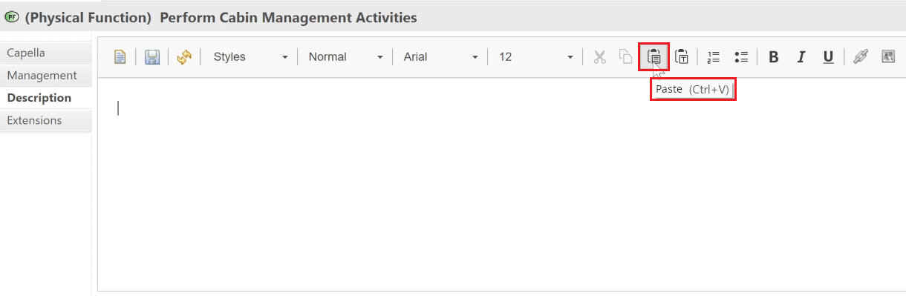

The Properties View is the place where the characteristics of each Capella elements are entered and displayed. This view is synchronized with the current selection on the diagram or in the project explorer.
Capella Editors are also available as dialogs, accessed with a double-click on any element.
These dialogs can also be opened from the contextual menu, accessed with a right-click on any element.
The content is exactly the same as in the Properties Views.
If the "Navigate to related diagrams on double click" preference is enabled, double-clicking on a Scenario/Operational Process/Functional Chain/Physical Path will trigger a diagram navigation action instead.

Capella editors contain 4 sections: semantic properties, description, extensions, management.
This section displays the most important semantic information about the current element. It also allows defining relationships between elements.
disabled by default, please refer to Capella Capabilities (online documentation)

The Descriptions section allows editing text descriptions for model elements.
|
|
If the description section doesn't work, for example the buttons are missing and you can't edit nothing in the text area, please check the log error, the cause can be due to a long installation path. |

|
|
If the text field looses the focus during the edition, especially when editing the description of a diagram that is currently open, it is recommended to uncheck the Link with Editor button.
|
Insertion of hyperlinks to other model elements and existing diagrams are possible using two mechanisms:
The first mechanism is similar to a model element copy paste and is called Copy as Hyperlink for Description.
Once you have a selection of elements (from the Project Explorer, Semantic Browser, Diagram elements etc), you can use the contextual menu Copy as Hyperlink for Description or use the associated keyboard shortcut Ctrl + Shift + C.

Then you can directly paste the selected element links in the description section, by using the Paste as link button, or the associated keyboard shortcut Ctrl + Shift + V.

The advantage of this approach is that you can copy and paste multiple model elements coming from different sources!
The second mechanism is embed directly in the editor and is accessible via a dedicated button:

It is also possible to insert images by using the dedicated button of the toolbar.
To get more editing options, open the Description in a dedicated Editor. To do so, click on the second button of the toolbar. A new Editor will open.


|
|
To avoid synchronization problems between the Description field of the Properties view and the dedicated Editor. It is recommended to have only one tool open at the same time to modify the text. |
Right-clicking on the hyperlinks to open the referenced diagram.

Spellchecking
For Windows version, the feature spellchecking is activated by default on Windows 8 and later. When typing a misspelled word in the rich text editor, it will be highlighted with a red underline.
If not activated, there are two possibilities:
Known issues
In case you encounter some blocking issues using the rich text editor, you can disable rich text which will be replaced by a simple field to edit directly XHTML, to do so please open the capella.ini file located in the Capella installation directory and add the java property -Ddisable.nebula.richtext=true as shown below:
-startup ... --launcher.library ... -nl en -vmargs -Dosgi.requiredJavaVersion=xx -Xms1000m -Xmx3000m -Xss4m -Ddisable.nebula.richtext=true
|
|
Fore more information, please refer to the user's guide of MDE Rich Text Widget provided by Kitalpha. |
The Extensions section allows defining which Property Values apply to the current element. Explicitly setting this relationship is useful when applied Property Values are not contained by the current element.
For example, one could imagine storing all the non functional properties of all elements in thematic packages (safety, performance, human factors, etc.) instead of having these properties spread all over the model.

Capella properties are also available in dialog boxes, using a double-click on elements in the diagrams. The Capella properties are a simplified version of the Eclipse ones.
The Management section contains non semantic information about the current element.

|
Field |
Description |
Default |
|
Visible in Documentation |
Specifies whether this element is exposed to the Documentation Generation tool. |
True |
|
Visible in Link Manager |
Specifies whether the current element is exposed to the Link Manager tool, for example for traceability with Requirements. |
True |
|
Progress Status |
Not all elements in the design phase of a System have the same maturity (some are Drafts, some need to be reviewed, etc.). This field allows setting the maturity level of the current Element. |
<blank> |
|
Review |
This field allows adding a comment on the progress status of the current element. When this field is not empty a validation rule throws a warning. |
empty |